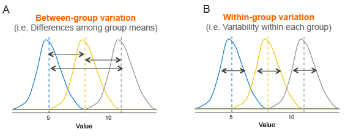
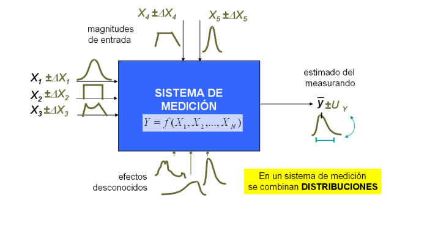
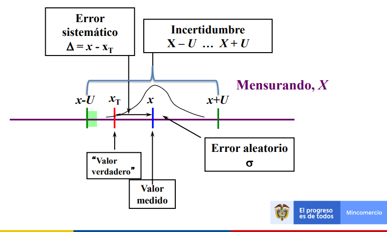
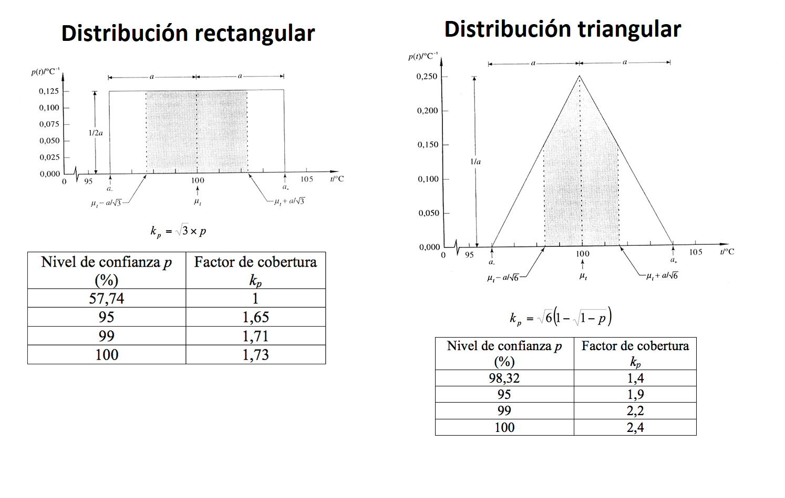
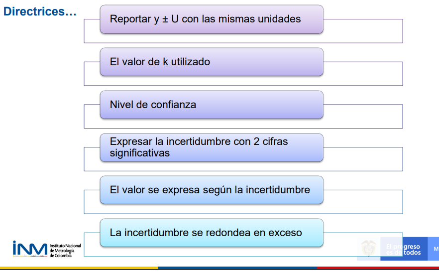
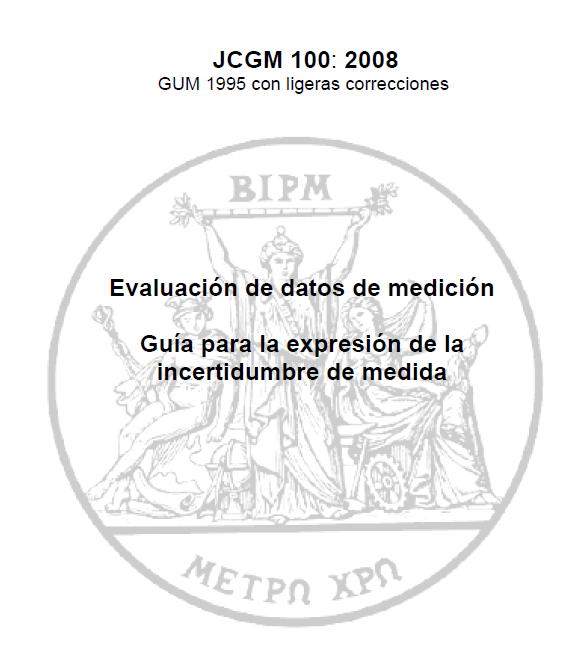
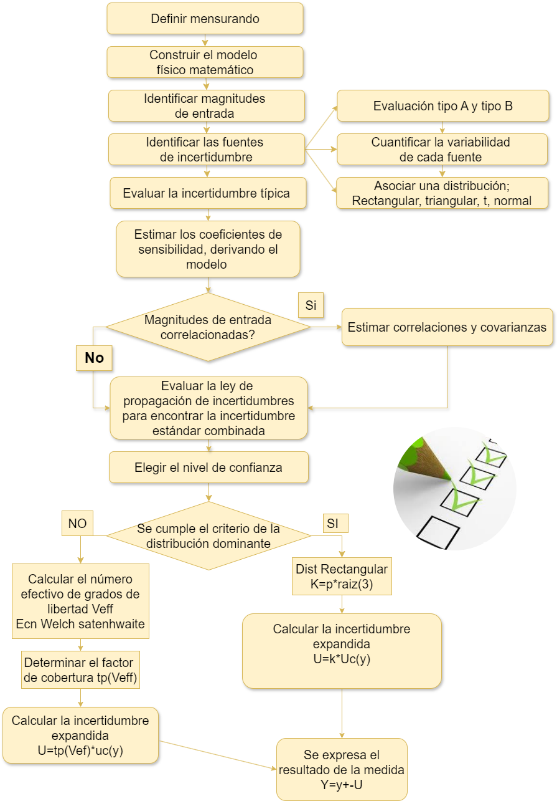
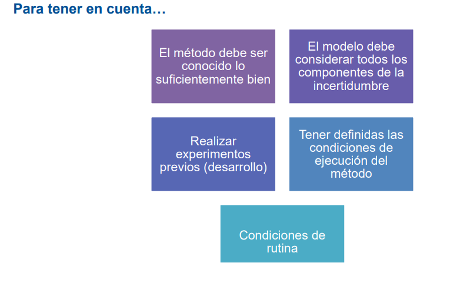
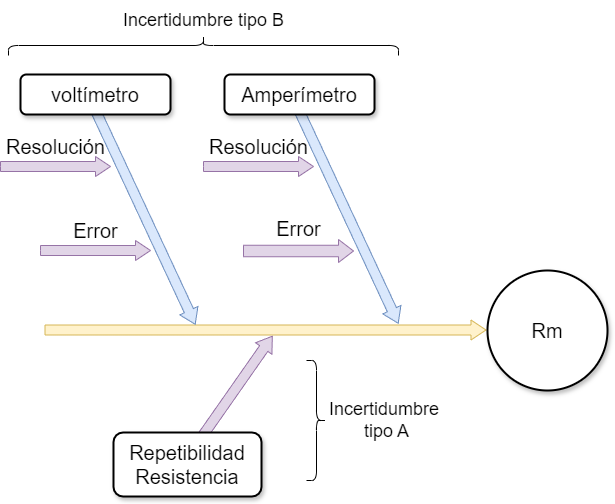
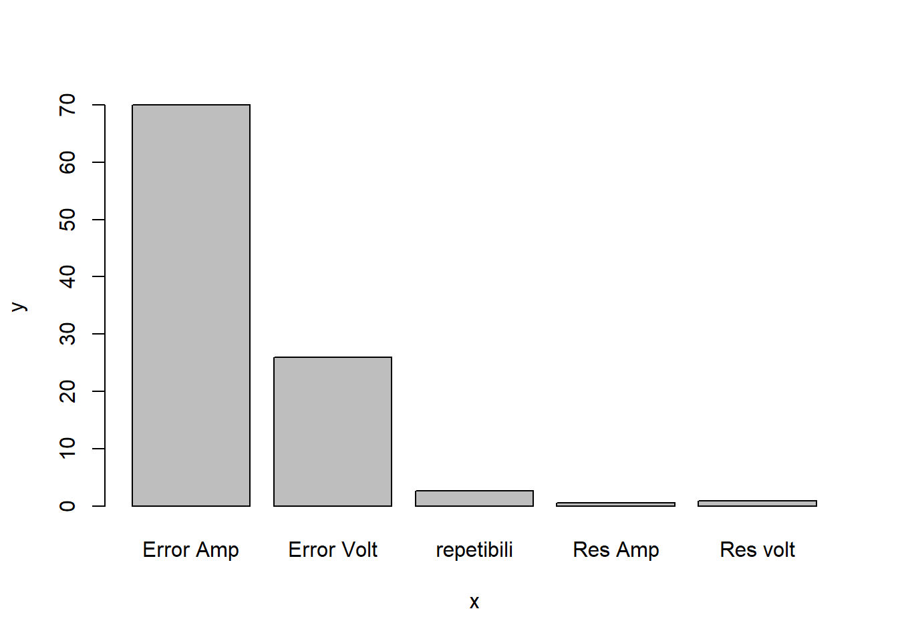

Determinación de la incertidumbre típica combinada
Incertidumbre típica
Antes de combinar las incertidumbres, estas deben estar expresadas como desviaciones estándar. Esto puede implicar la conversión de algunas medidas de dispersión. Algunas reglas son
Si una componente de la incertidumbre ha sido evaluado como la dispersión de medidas repetidas, este puede expresarse como una desviación estándar.
Si es una incertidumbre tipo B, obtenida mediante una una especificación del fabricante, de un certificado de calibración,la incertidumbre viene dada como un múltiplo específico de una desviación típica, la incertidumbre típica \(u(xi)\) es simplemente el cociente entre el valor indicado y el factor multiplicador.
EJEMPLO
Un certificado de calibración indica que la masa de un patrón de acero inoxidable, de valor nominal igual a un kilogramo, es \(m_S = 1000,000325 g\), y que “la incertidumbre de este valor es de 240 μg, para un nivel de tres desviaciones típicas”.
La incertidumbre típica del patrón de masa es simplemente \(u(m_S)=(240 μg)/3 =80 μg\).
La incertidumbre típica relativa \(u(mS)/mS\) de \(80 × 10^{-9}\)** .
La varianza estimada es \(u^2(mS) = (80 μg)^2 = 6,4×10^{-9} g^2.\)
Nota:
La desviación estándar relativa, también conocida como coeficiente de variación, es una medida de dispersión relativa que compara la desviación estándar con la media de un conjunto de datos.
\[\frac{sd}{\bar x}*100\]
incertidumbre típica relativa
\[u(xi)/⏐xi⏐\]
Si la incertidumbre tipo B se obtiene a partir de un intervalo de confianza del 90, 95 ó 99 por ciento, suponiendo una distribución normal, la incertidumbre típica se obtiene mediante simple división del valor de incertidumbre dado por el factor correspondiente de la distribución normal. Dicho factor, para los tres niveles de confianza citados, es 1,64; 1,96 y 2,58.
Ejemplo 1
Una especificación establece que la lectura de una balanza está entre ±0,2 mg con un 95 % de confianza.
A partir de tablas estándar de puntos porcentuales de distribución normal, se calcula un intervalo de confianza del 95% usando un valor de 1,96.
Usando esta cifra resulta una incertidumbre estándar de (0,2/1,96)= 0,1.
Ejemplo 2
Un certificado de calibración indica que el valor \(R_S\) de una resistencia patrón de valor nominal 10Ω es 10,000742 Ω ± 129 μΩ a 23 °C, y que “la incertidumbre indicada de 129 μΩ define un intervalo con nivel de confianza del 99 por ciento”.
La incertidumbre típica del valor de la resistencia puede suponerse que es u(RS) = (129 μΩ) / 2,58 = 50 μΩ, que corresponde a una incertidumbre típica relativa u(RS)/RS de \(5,0×10^{-6}\)).
Si los límites de ±a son dados sin nivel de confianza, hay motivos para esperar que sea probable que haya valores extremos, normalmente es apropiado suponer una distribución rectangular, con una desviación estándar de
\[\frac{a}{\sqrt 3}\]
**EJEMPLO**Un matraz volumétrico de Clase A de 10 mL está certificado dentro de ±0,2 mL.
La incertidumbre estándar es \[0,2/\sqrt 3=0,12 mL\]
Si los límites de ±a son dados sin nivel de confianza, pero hay motivos para esperar que sea improbable que haya valores extremos,normalmente es apropiado suponer una distribución triangular, con una desviación estándar de \(a/\sqrt6\).
EJEMPLO Un matraz volumétrico de Clase A de 10 mL está certificado dentro de ±0,2 mL, pero controles internos rutinarios muestran que los valores extremos son infrecuentes. La incertidumbre estándar es \(0,2/\sqrt 6 = 0,08 mL\)
Incertidumbre típica combinada
Después de estimar los componentes de la incertidumbre y de expresarlos como incertidumbres estándar, el siguiente paso es calcular la incertidumbre estándar combinada.
\(u_c(y)\) es una desviación típica estimada y caracteriza la dispersión de los valores que podrían ser razonablemente atribuidos al mensurando Y.
La incertidumbre típica combinada de y es \(u_c(y)\), se obtiene de las incertidumbres típicas de las estimaciones de entrada \(x_1, x_2, ..., x_N\).
Se distinguen dos casos para hallar la incertidumbre, en donde las variables pueden ser dependientes o independientes, en ambos casos las ecuaciones están basadas en un desarrollo en serie de Taylor de primer orden de \(Y = f(X_1, X_2, ..., X_N)\), expresan lo que en la Guía se denomina ley de propagación de la incertidumbre.
Incertidumbre típica para magnitudes independientes
La incertidumbre típica combinada \(u_c(y)\) es la raíz cuadrada positiva de la varianza combinada \(u_c^2(y)\), dada por:
\[u_c^2(y)=\sum_{i=1}^N \left[ \frac{\partial f }{\partial x_i} \right]^2 u^2(x_i)\]
Con las derivadas parciales \(\frac{\partial f }{\partial x_i}\) calculadas para \(Xi =x_i\), se obtienen unas constantes llamadas coeficientes de sensibilidad, describen cómo varía la estimación de salida y, en función de las variaciones en los valores de las estimaciones de entrada \(x_1, x_2, ..., x_N.\)
Los coeficientes de sensibilidad pueden ser evaluados de manera experimental; es útil donde no existe una descripción matemática fiable de la relación.
\[c_i=\frac{\partial f }{\partial x_i}\]
reemplazando en la ecuación anterior se obtiene
\[u_c^2(y)=\sum_{i=1}^N c_i^2 u^2(x_i)\] de forma equivalente:
\[u_c(y)=\sqrt {\sum_{i=1}^N c_i^2 u^2(x_i)}\] Incertidumbre típica para magnitutes dependientes o correlacionadas
Cuando las variables no son independientes, la relación es más compleja GUM expresa la incertidumbre típica como:
\[u_c^2(y)=\sum_{i=1}^N \sum_{j=1}^N \frac{\partial f }{\partial x_i}\frac{\partial f }{\partial x_j}u(x_i,x_j)=\sum_{i=1}^N\left[ \frac{\partial f }{\partial x_i} \right]^2 u^2(x_i)+2\sum_{i=1}^{N-1}\sum_{j=i+1}^N \frac{\partial f }{\partial x_i} \frac{\partial f }{\partial x_j} u(x_i,x_j)\]
donde \(x_i\) y \(x_j\) son las estimaciones de \(Xi\) y \(Xj\), y \(u(x_i,x_j)=u(x_j,x_i)\) es la covarianza estimada asociada a \(x_i\) y \(x_j\).
El grado de correlación entre xi y xj viene dado por el coeficiente de correlación estimado como
\[r(x_i,x_j)=\frac{u(x_i,x_j)}{u(x_i)u(x_j)}\] donde \(r(xi,xj) = r(xj,xi) y −1 ≤ r(xi,xj) ≤ +1.\)
Si las estimaciones \(x_i\) y \(x_j\) son independientes, \(r(x_i,x_j) = 0\), ees una variación en una de las dos no implica una variación en la otra.
El segundo término de la covarianza, puede escribirse en función de los coeficientes de correlación, más fácilmente interpretables que las covarianzas, como:
\[2\sum_{i=1}^{N-1}\sum_{j=i+1}^N \frac{\partial f }{\partial x_i} \frac{\partial f }{\partial x_j} u(x_i) u(x_j) r(x_i,x_j)\] La ecuación queda transformada en
\[u_c^2(y)=\sum_{i=1}^N \sum_{j=1}^N \frac{\partial f }{\partial x_i}\frac{\partial f }{\partial x_j}u(x_i,x_j)=\sum_{i=1}^N\left[ \frac{\partial f }{\partial x_i} \right]^2 u^2(x_i)+2\sum_{i=1}^{N-1}\sum_{j=i+1}^N \frac{\partial f }{\partial x_i} \frac{\partial f }{\partial x_j} u(x_i) u(x_j) r(x_i,x_j))\] En esta ecuación haciendo
\[c_i=\frac{\partial f}{\partial x_i}\quad u_i(y)=|c_i|u(x_i)\] y asumiendo que las correlaciones son 0, el 2 termino no existe Se llega a:
\[u_c(y)=\sqrt {\sum_{i=1,n}c_i^2 u^2(x_i)}\]
donde
- f es la función del mesurando dada por:
\[Y=f(X_1,X_2,...,x_n)\]
Cada \(u(xi)\) es una incertidumbre típica, (Tipo A o Tipo B).
\(c_i\) y \(c_k\), son los coeficientes de sensibilidad
\(u(x_i,x_j)\) es la covarianza entre \(x_i\) y \(x_k\)
La covarianza se relaciona con el coeficiente de correlación \(r_{ik}\) de este modo:
\[u(x_i,x_k) = u(x_i)*u(x_k)*r_{ik}\]
donde \(-1 \leq rik \leq 1\)
Otras formas
En algunos casos, las expresiones para combinar incertidumbres se reducen a formas más sencillas. Aquí se dan dos reglas simples para combinar incertidumbres estándar.
Regla 1
Para modelos que supongan solo una suma o diferencia de cantidades, por ejemplo \(y=(p+q+r+...)\), la incertidumbre estándar combinada uc(y) viene dada por: \[uc (y(p,q..))=\sqrt {u(p)^2 +u(q)2^.....}\]
EJEMPLO 1 sea la ecuación
\[y = (p-q+r)\]
| valores | p | q | r |
|---|---|---|---|
| valor | 5.02 | 6.45 | 9.04 |
| \(u(c)\) | 0.13 | 0.05 | 0.22 |
\[y = (5.02-6.45+9.04)=7.61\] \[u(y)=\sqrt{0.13^2+0.05^2+0.22^2}\]
Regla 2
Para modelos que impliquen un producto o un cociente, por ejemplo \(y=(p\ast q\ast r ...)\) o \(y= p/(q\ast r...),\), la incertidumbre estándar combinada \(u_c(y)\) es dada por
\[u_c(y)=y*\sqrt{\left[ \frac{u(p) }{p} \right]^2+ \left[ \frac{u(q) }{q} \right]^2+.... }\]
donde (u(p)/p) son las incertidumbres en los parámetros, expresadas como desviaciones estándar relativas.
EJEMPLO 2 \[y = (op/qr)\].
| valores | o | p | q | r |
|---|---|---|---|---|
| valor | 2.46 | 4.32 | 6.38 | 2.99 |
| \(u(c)\) | 0.02 | 0.13 | 0.11 | 0.07 |
\[y=(2,46*4,32 )/(6,38 *2,99 ) = 0,56\]
\[u(y)=0.56\sqrt{\left[ \frac{0.02 }{2.46} \right]^2+ \left[ \frac{0.13 }{4.32} \right]^2+\left[ \frac{0.11 }{6.38} \right]^2+ \left[ \frac{0.07 }{2.99} \right]^2}\]
\[u(y)=0.56*0.043=0.024\]
Ejemplo 2:
Las especificaciones del fabricante de un voltímetro digital indican que “entre uno y dos años después de la calibración del instrumento, su exactitud en el rango de 1 V es \(14 × 10^{-6}\) veces la lectura más \(2 × 10^{-6}\) veces el rango”.
Supongamos que el instrumento se utiliza 20 meses después de la calibración para medir una diferencia de potencial V en el rango de 1 V, y que se obtiene como media aritmética de un número de observaciones repetidas e independientes el valor V = 0,928 571 V, con una incertidumbre típica tipo A, u(V)=12 μV.
La evaluación Tipo B de la incertidumbre típica se deduce de las especificaciones del fabricante, se supone que la exactitud representa los límites simétricos de una corrección aditiva a V , ΔV , de esperanza matemática igual a cero y pudiendo situarse con igual probabilidad entre dichos límites.
La semiamplitud a de la distribución rectangular simétrica de los valores posibles de Δ V , es entonces
\[a=(14 × 10^{-6})×(0,928571 V) + (2× 10^{-6})×(1V)=15 μV\]
y, a partir de la ecuación de la incertidumbre dada por una distribución rectángular:
\[u_c=\frac{a}{\sqrt 3}=\frac{15μV }{\sqrt 3}=8.7\]
\[u^2(ΔV)=75 μV2 \quad u(ΔV) = 8,7 μV\]
La estimación del valor del mensurando V, denominada por simplificación con el mismo símbolo V, viene dada por
\[V = V + Δ V = 0,928 571 V\]
Puede obtenerse la incertidumbre típica combinada de esta estimación combinando la incertidumbre típica Tipo A de V , 12 μV, con la incertidumbre típica Tipo B de ΔV , 8,7 μV. .
la corrección aditiva ΔV = 0, y u(ΔV) = 8,7 μV. Como::
\[\frac{\partial V}{\partial V}=1\]
\[\frac{\partial V}{\partial ΔV}=1\] La varianza combinada asociada a V viene dada por:
\[uc^2(V) = u^2(V) + u^2(ΔV) = (12 μV) + (8,7 μV) = 219* 10^{-12} V\]
y la incertidumbre típica combinada es \[u_c(V) = 15 μV\]
Importancia del analisis de varianza en la medición
El análisis de la varianza:
No identifican efectos sistemáticos.
Identifica y cuantifica efectos aleatorios en una medición, para ser tenidos en cuenta en la estimación de la incertidumbre del resultado de medida.
Se utiliza para la certificación de materiales de referencia (MR) mediante ensayos interlaboratorios que implican:
Varios laboratorios independientes de igual nivel, que midan las muestras de material.
La media de cada laboratorio es una estimación no sesgada de la propiedad del material.
I laboratorios diferentes.
J muestras distintas del material
K observaciones repetidas e independientes.
El número total de observaciones sería entonces IJK.
El número total de muestras IJ.
Las diferencias entre los resultados individuales, tanto inter (entre) laboratorios como intra (dentro) laboratorio, son de naturaleza estadística, sin importar sus causas.

Laboratorio
Incertidumbre de una medida
\[Valor_{nominal}=\bar x +Instrumento+método\] \[Instrumento=Calibración+resolución\]
\[Método=repetibilidad\quad de\quad las \quad medidas\]
\[Valor_{nominal}=\bar x +Calibración+resolución+repetibilidad\]
\[Valor_{nominal}=\bar x +u_{Calibración}+u_{resolución}+u_{repetibilidad}\]
Propagación de incertidumbre
Permite estimar la incertidumbre en un resultado a partir de las incertidumbres en las mediciones utilizadas para calcular ese resultado, es decir es la estimación de la incertidumbre estándar combinada.
A manera de resumen evidenciamos la siguiente tabla donde se relaciona la función con la estimación de incertidumbre.
| Función | \(\bf \mu_R\) |
|---|---|
| \(R=kA\) | \(\mu_R=k\mu_A\) |
| \(R=A\pm B\) | \(\mu_R=\sqrt {\mu_A^2+\mu_B^2}\) |
| \(R=A*B \qquad R=\frac{A}{B}\) | \(\frac{\mu_R}{R}=\sqrt {\left(\frac{\mu_A}{A} \right)^2+\left(\frac{\mu_B}{B} \right)^2}\) |
| \(R=ln(A)\) | \(\mu_R=\frac{\mu_A}{A}\) |
| \(R=log(A)\) | \(\mu_R=0.4343*\frac{\mu_A}{A}\) |
| \(R=e^A\) | \(\frac{\mu_R}{R}=\mu_A\) |
| \(R=ln(A)\) | \(\mu_R=\frac{\mu_A}{A}\) |
Teorema de límite central
La mayoría de los experimentos de medición tienen características que los aproximan fácilmente a una condición de normalidad, para que la distribución de probabilidad de un resultado de medición tienda al modelo normal se requiere:
Que la función que define al mensurando Y sea función lineal de otras magnitudes.
Que la distribución de probabilidad de las magnitudes que definen al mensurando Y sea del tipo normal o una aproximación a la distribución normal.
También se puede aceptar que la distribución de probabilidad de algunas magnitudes de definición sea rectangular sólo si éstas últimas son en número menor que las del tipo normal.
 Tomado de Llamosa et al (2011).
Incertidumbre expandida U
Proporciona un intervalo que comprende una gran fracción de la distribución de valores los cuales podrían ser atribuidos razonablemente al mensurando.

Para obtener la incertidumbre expandida se multiplica la incertidumbre típica combinada por el factor de cobertura (K) escogido para obtener una incertidumbre expandida.
El intervalo se denota como
\[(y-u_c(y)K_p,\quad y+u_c(y)K_p)\]
El producto \(K_pu_c(y)=U_p\) se denomina incertidumbre expandida, donde \(k_p\) es el factor de cobertura para un nivel de confianza p.
matemáticamente es
\[P((y-U_p\leq Y\leq y+U_p)=p\]
El area de la función de densidad es
\[\int_{y-U_p}^{y+U_p} f(y)dy=p \]
La función f(y) puede ser una normal, una t student, una triangular o una rectangular.
Al escoger un valor para el factor de cobertura k, se deben considerar varios aspectos.
Entre ellos se incluyen:
El nivel de confianza requerido.
Las distribuciones subyacentes.
Valores usados para estimar efectos aleatorios.
Incertidumbre dominante
Distribución rectangular
Incertidumbre dominante (EA-4/02. (2022))
Si una de las contribuciones a la incertidumbre puede identificarse como un término dominante, denotado por \(\mu_1(y)\), y otra incertidumbre se denota por \(\mu_R(y)\), la incertidumbre estándar que se asociará con el resultado de la medición es:
\[\mu(y)=\sqrt{\mu_1^2(y)+\mu_R^2(y)}\]
Donde el termino \(\mu_R(y)\) es la combinación de las contribuciones no dominantes, estimada como:
\[\mu_R(y)=\sqrt{\sum_{i=2}^N \mu_i^2(y)}\]
Criterio de la distribución dominante
En la relación
\[ \frac{\mu_R(y)}{\mu_1(y)}=R\]
Si \(R\leq 0.3\)
La ecuación de la incertidumbre típica combinada puede aproximarse como:
\[\mu_c(y)=\mu_1(y)*\left[1+\frac{1}{2} \left( \frac{\mu_{R}(y)}{\mu_1 (y)} \right)^2 \right]\]
Con un error relativo de aproximación menor que \(1*10^{-3}\).
En este caso la distribución dominante es la rectángular, donde el factor de cobertura (después de unos calculos complejos) se evalúa asi:
\[k=p\sqrt 3\] Donde p es el nivel de confianza deseado

Distribución normal
En la mayoría de los casos se recomienda que k sea 2, este valor se relaciona con un nivel de confianza del 95.45%. Sin embargo, este valor de k podría ser insuficiente cuando la incertidumbre combinada esté basada en observaciones estadísticas con pocas observaciones (n), por tanto pocos grados de libertad (n-1) (menos de 6).
La siguiente tabla ilustra la elección de la distribución según el nivel de confianza.
https://huggingface.co/spaces/FreddyHernandez/Dmuestrales
Distribución t student
Cuando la incertidumbre estándar combinada está dominada por una sola contribución con menos de 6 grados de libertad (pocas observaciones (n-1)), se recomienda que k sea fijado igual al valor de la t de Student para dos colas, para el número de grados de libertad asociado con esa contribución, y para el nivel de confianza requerido (normalmente 95%).
La elección de k depende del número efectivo de grados de libertad.
Ejemplo
Una incertidumbre estándar combinada para una operación de pesaje está formada por la contribución de la incertidumbre de la calibración \(u_{cal}=0,01 mg\) y la desviación estándar de cinco observaciones repetidas \(s_{obs}=0,08 mg\).
La incertidumbre estándar combinada \(u_c\) es:
\[u_c=\sqrt {0,01^2+ 0,08^2} = 0,081 mg\]
La incertidumbre está dominada por la contribución de la repetibilidad \(s_{obs}\), la cual está basada en 5 observaciones, dando 5-1=4 grados de libertad. Entonces k está basada en la t deStudent. El valor para dos colas de t para cuatro grados de libertad y 95% de confianza es 2,8; por lo que k toma el valor de 2,8 y la incertidumbre expandida es
\(U=2,8*0,081=0,23 mg\).
Cuantificación del número de grados de libertad
Los grados de libertad se pueden considerar una medida de incertidumbre de la incertidumbre asociada a una magnitud.
Entre mayor sea 𝜈, la estimación de la incertidumbre será más confiable.
Número efectivo de grados de libertad \((𝜈_{eff})\) del mensurando
Considera el número de grados de libertad \(𝜈_𝑖\) de cada fuente de incertidumbre
Una cantidad que depende de la medición de varias variables:
\[q=q(x_1,x_2,...x_n)\] En el caso que las variables no estén correlacionadas (covarianza nula):
\[S_q^2=c_1^2s^2_{x_1}+c_2^2s^2_{x_2}+...+c_1^2s^2_{x_1}\]
Donde los \(c_i\) son los coeficientes de sensitividad y están definidos por las derivadas parciales. Cada una de las incertidumbres \(s_{x_i}\) está asociada con \(ν_i\) grados de libertad.
Grados de libertad para una incertidumbre tipo B
Se puede asignar grados de libertad a una incertidumbre tipo B, aún cuando las incertidumbres puedan ser de tipo B, para especificar una incertidumbre en un reporte, seguramente se hicieron muchas medidas, es decir que originalmente es de tipo A, que se convierte en tipo B al ser usada la información por otros. En consecuencia es posible suponer que el valor obtenido del reporte tiene una distribución normal aún cuando la incertidumbre estándar asociada es del tipo B.
Los grados de libertad están dados por:
\[v=\frac{s^2}{2u^2(s)}= \frac{1}{2} \left(\frac{u(s)}{s} \right)^{-2}\]
La pregunta que surge es cuantos grados de libertad deberían asociarse a \(S_q\) para poder calcular un intervalo de confianza. La respuesta esta dada por la fórmula de Welch-Satterthwaite, que aunque aproximada, es adecuada en la mayoría de los casos.
\[\frac{\mu^4_c(y)}{v_{eff}}=\sum_{i=1}^N\frac{c_i^4*\mu^4(x_i)}{v_i}+2 \sum_{i=1}^N\sum_{i=1}^N \left(\frac{c_i*c_j*\mu(x_i)*\mu(x_j)*r(x_i,x_j)}{v_j} \right)^{2}\]
Donde:
N número de fuentes de incertidumbres identificadas y cuantificadas
\(v_i,v_j\): Grados de libertad asociados a la fuente de incertidumbre i o j
\(r(x_i,x_j)\): coeficiente de correlación entre las variables i y j
Si las variables son no correlacionadas el segundo término de la Ecuación se hace cero.
Escrito de otra manera
\[v_{ef}=\frac{U^4_c(y)}{\sum_{i=1}^{n}\frac{c_i^4u^4(x_i)}{vi}}\]
Informar la incertidumbre

Cuando la incertidumbre se exprese como la incertidumbre estándar combinada uc (es decir como una desviación estándar simple), se recomienda hacerlo de la siguiente forma:
EJEMPLO:
Resultado:
x (unidades) [con una] incertidumbre estándar de uc (unidades)
Nitrógeno total: 3,52 g/100 g
Incertidumbre estándar: 0,07 g/100 g
La incertidumbre estándar corresponde a una desviación estándar
Informe de la incertidumbre expandida
El resultado x debe ser establecido junto con la incertidumbre expandida U calculada usando un factor de cobertura k=2 (o como se describe en la sección Se recomienda hacerlo del modo siguiente:
\[(Resultado): (x \pm U) (unidades)\] [donde] la incertidumbre informada está calculada usando un factor de cobertura de 2, [lo que da un nivel de confianza de aproximadamente 95 %]”
\[Nitrógeno \quad total: (3,52 \pm 0,14) g/100 g \]
*La incertidumbre informada es una incertidumbre expandida calculada usando un factor de cobertura de 2, lo que da un nivel de confianza de aproximadamente el 95%.
GUM JCGM 100:2008 Guía para la expresión de la incertidumbre de medición

Reglas generales para evaluar y expresar la incertidumbre de medición Aplicable en diversos campos de mediciones, incluyendo las necesarias para:
• Mantener el control y el aseguramiento de la calidad en producción
• Cumplir con leyes y reglamentos
• Apoyar I+D aplicados en ciencia e ingeniería
• Calibrar patrones, equipos y realizar ensayos para demostrar trazabilidad
• Desarrollar, mantener y comparar patrones físicos y materiales de referencia
La GUM cuenta con dos complementos para su aplicación,
Evaluación de datos de medición —Suplemento 1 de la “Guía para la expresión de la incertidumbre de medida”— Propagación de distribuciones aplicando el método de Monte Carlo.
Evaluación de medición datos – Suplemento 2 del “Guía para la expresión deincertidumbre en la medición” – Ampliación a cualquier número de cantidades de salida
PASOS PARA LA ESTIMACIÓN DE INCERTIDUMBRE ISO-GUM


Ejemplo
Se ha efectuado la determinación del valor de una resistencia R, empleando el método del voltímetro y el amperímetro (en conexión corta),

Los instrumentos utilizados fueron dos multímetros marca Hewlett Packard, modelo HP974A, en sus funciones de voltímetro y amperímetro, respectivamente. Se realizaron 6 mediciones en similares condiciones, obteniéndose los siguientes pares de valores:
en los alcances de 50 V y 500 mA de corriente continua, respectivamente.
En primera aproximación, la expresión (1),
\[𝑌=𝑓(𝑋_1,𝑋_2,...,𝑋_𝑁)\] aplicada a este caso, sería:
\[𝑌=𝑓(𝑋_1,𝑋_2,...,𝑋_𝑁)=𝑓(𝑉_𝑚,𝐼_𝑚)=𝑅_𝑚=\frac{V_𝑚}{𝐼_𝑚}\]
Sin embargo, teniendo en cuenta el consumo del voltímetro para la conexión usada, se debería efectuar, al menos inicialmente, una corrección como la que sigue:
\[ 𝑌=𝑓(𝑋_1,𝑋_2,...,𝑋_𝑁)=𝑓(𝑉_𝑚,𝐼_𝑚,𝑅_𝑉)=𝑅_𝑚=\frac{𝑉𝑚}{𝐼_𝑚−\frac{𝑉_𝑚}{𝑅_𝑉}}\]
donde \(R_V\) corresponde a la resistencia interna del voltímetro con valor de 10 M𝛺. De la ecuación anterior, se puede obtener, para cada uno de los valores medidos, la estimación de salida y, a partir de las estimaciones de entrada \(x_1, x_2,…,x_N\).
| Medición Nº | 1 | 2 | 3 | 4 | 5 | 6 | prom | sd |
|---|---|---|---|---|---|---|---|---|
| \(Vm[V]\) | 12,615 | 12,610 | 12,614 | 12,612 | 12,615 | 12,613 | 12.613 | |
| \(Im[mA]\) | 237,21 | 237,20 | 237,18 | 237,22 | 237,20 | 237,21 | 237.203 | |
| \(R_m[\Omega]\) | 53,181 | 53,162 | 53,184 | 53,166 | 53,183 | 53,173 | 53.175 | 0.009 |
Pasos establecidos según GUM
- Definir mensurando \[ 𝑌=𝑓(𝑉_𝑚,𝐼_𝑚,𝑅_𝑉)\]
- Modelo físico matemático
\[𝑅_𝑚=\frac{𝑉_𝑚}{𝐼_𝑚−\frac{𝑉_𝑚}{𝑅_𝑉}}\]
- Identificar fuentes de incertidumbre

- Estimar las fuentes de de incertidumbre
Incertidumbre de resolución
\[u=\frac{rsln}{\sqrt {12}}\] Incertidumbre del error
A partir de las expresiones de los errores correspondientes a los instrumentos utilizados, y empleando el promedio de los valores medidos de tensión y corriente, se tiene:
Voltímetro \[𝐸_{𝑉_𝑚}= ± (0,05 \% \quad \bar V_𝑚 + 2 \quad 𝑑í𝑔\quad rsln )\]
\[𝐸_{𝑉_𝑚}= ± (0,05 \% \quad 12.613 + 0.002 )= ± 0,0083 𝑉\]
Amperímetro
\[𝐸_{𝐼_𝑚}= ± (0,3 \% \bar I_𝑚 + 2 \quad 𝑑í𝑔\quad rsln)\]
\[𝐸_{𝐼_𝑚}= ± (0,3 \%* 237.203 + 0.02)= ± 0,73 𝑚𝐴\] Las incertidumbres del error están dadas por
\[u_c=\frac{error}{\sqrt 3}\]
| fuente | subfuente | Tipo | Distribución | Medida | incertidumbre |
|---|---|---|---|---|---|
| Voltímetro | Resolución | B | Rectángular | rsln=0.001 V | 0.00029 V |
| Error | B | Rectángular | e=0.0083 V | 0.0048 V | |
| Amperímeto | Resolución | B | Rectángular | rsln=0.01 mA | 0.0029 mA |
| Error | B | Rectángular | e=0.73 mA | 0.42 mA | |
| Repetibilidad | Resistencia | A | t student | s=0.009 𝛺 | 0.00367 𝛺 |
- Estimar los coeficientes de sensibilidad
\[𝑅_𝑚=\frac{𝑉_𝑚}{𝐼_𝑚−\frac{𝑉_𝑚}{𝑅_𝑉}}\]
Usar la regla del cociente
\[\left(\frac{f}{g}\right)=\frac{f'g-g'f}{g^2}\]
\[\frac{\partial R}{\partial V_m}=\frac{I_m}{\left(I_m-\frac{V_m}{R_v}\right)^2 }=4.2159\frac{1}{A}\]
\[\frac{\partial R}{\partial I_m}=\frac{-V_m}{\left(I_m-\frac{V_m}{R_v}\right)^2 }=-224.18\frac{V}{A^2}\] Contribución a la incertidumbre
Evalua la contribución de cada variable a la incertidumbre total del proceso a través del índice de contribución de cada una de ellas; para establecer puntos críticos que pueden mejorarse para disminuir la incertidumbre del método.
\[Ind (\%)=\frac{c_i*u_i}{\sum_i(c_i*u_i)}\]
| fuente | subfuente | incertidumbre | coef de sens | \(c_i*u_i\) | \(Ind (\%)\) |
|---|---|---|---|---|---|
| Voltímetro | Resolución | 0.00029 V | \(4.2159\frac{1}{A}\) | 0.001223 V/A | 0.9 |
| Error | 0.0048 V | 0.034992 V/A | 26 | ||
| Amperímeto | Resolución | 0.0029 mA | \(-224.18\frac{V}{A^2}\) | 0.00065 V/A | 0.5 |
| Error | 0.42 mA | 0.094155 V/A | 70 | ||
| Repetibilidad | s=0.009 𝛺 | 0.00367 𝛺 | 1 | 0.00367 𝛺 | 2.6 |
| suma | 0.134698 𝛺 | 100 |

Agrupación de incertidumbres según el tipo
Dado que hay varias incertidumbres provienen de diferentes fuentes, se agrupan aquellas pertenecientes a la tipo B
\[u_B(R)=\sqrt {u^2_{v_m}(R)+u^2_{I_m}(R)}\] Es decir: \[u_B(R)=\sqrt {C^2_{V_m}[u^2(E_{v_m})+u^2(Res_{v_m})]+C^2_{I_m}[u^2(E_{I_m})+u^2(Res_{I_m})]}\]
Reemplazando: \[u_B(R)=\sqrt {4.2159^2[0.0048^2+0.00029^2]+224.18^2[0.00042^2+0.0000029^2]}=\pm 0.096 \]
Ahora se evalua la incertidumbre total, teniendo en cuenta aquellas provenientes tanto de las tipo A como las de tipo B
\[u(R)=\pm\sqrt {u^2_A(R)+u^2_B(R)}=\pm 0.096\] \[u(R)=\pm\sqrt {0.0038^2+0.096^2}=\pm 0.096\]
Grados de libertad
Determinar los grados de incertidumbre de cada uno de los parámetros
\[v_{eff}=\frac{u^4(R)}{\sum_{i=1}^N \frac{u_i^4(R)}{v_i}}=\frac{u^4(R)}{\frac{u_i^4(R)}{5}+\frac{u_i^4(R)}{\infty}+\frac{u_i^4(R)}{\infty}}\]
\[v_{eff}=\frac{(0.096 \Omega)^4}{\ \frac{(0.038\Omega)^4 }{5}}\geq 2.1*10^6\]
Para una cobertura del 95% con y gl infinitos se obtiene un factor de cobertura de 1.96
\[U=k*u(y)=1.96*0.096 \Omega=0.19 \Omega \] \[R=(53.18\pm 0.19)\Omega \]
Otro camino, incertidumbre dominante, bajo el teorema de límite central:
Criterio de la distribución dominante
\[\frac{u_r(y)}{u_1(y)}<0.3\] Donde \(u_r(y)\) es la contribución de las incertidumbres no dominantes, \(u_1(y)\) es la incertidumbre estándar de mayor valor siempre y cuando sea “no normal”
Aporte de las incertidumbres no dominantes
\[u_B(R)=\sqrt {0.00367^2+4.2159^2[0.0048^2+0.00029^2]+224.18^2[0.0029^2]}=\pm 0.65045 \]
Incertidumbre no dominante
\[\sqrt{224.18^2*[0.00042^2]}=4.5943\]
\[\frac{0.65045}{4.594322}=0.1415<0.3\] Bajo este criterio, y con un nc del 95%, se tiene que el factor de cobertura es
\[k=p*\sqrt 3=1.64\] \[U=k*u(y)=1.64*0.096 \Omega=0.15744 \Omega\]
\[R=(53.18\pm 0.16)\Omega \] Analisis comparativo de ambos resultados
| con Dist rectángular | Con Dist Normal | |
|---|---|---|
| gl efectivos | \(\infty\) | — |
| \(U_c\) | 0.096 | 0.096 |
| k | 1.64 | 1.96 |
| \(U_e\) | 0.15744 | 0.18816 |
Magnitudes dependientes o correlacionadas
Algunas situaciones llevan a considerar una correlación significativa entre dos magnitudes de entrada, como si se utiliza el mismo instrumento de medida, el mismo patrón o la misma referencia con incertidumbre típica significativa.
Dicha asociación entre variables es posible estimarla a través de la matriz de varianzas \(u^2(xi)\) y covarianzas \(u(x_i,x_j)=u(x_j,x_i)\).
\[\begin{bmatrix} u_1^2(xi) & u(x_1,x_2) & \cdots & u(x_1,x_n)\\ u(x_2,x_1) & u_2^2(x_2) & \cdots & u(x_2,x_n) \\ \vdots & \vdots & \ddots & \vdots \\ u(x_n,x_1) & u(x_n,x_2) & \cdots & u_n^2(x_n) \end{bmatrix}\]
Si dos estimaciones de entrada no están correlacionadas, su covarianza asociada y los elementos correspondientes \(u_{ij}\) y \(u_{ji}\) de la matriz varianza-covarianza son cero.
\[\begin{bmatrix} u_1^2(xi) & 0 & \cdots & 0\\ 0 & u_2^2(x_2) & \cdots & 0 \\ \vdots & \vdots & \ddots & \vdots \\ 0 & 0 & \cdots & u_n^2(x_n) \end{bmatrix}\]
El grado de correlación entre \(xi\) y \(x_j\) viene dado por el coeficiente de correlación estimado como
\[r(x_i,x_j)=\frac{u(x_i,x_j)}{u(x_i)u(x_j)}\] donde \(r(x_i,x_j)=r(x_j,x_i)\quad y \quad −1 ≤r(x_i,x_j)≤+1.\)
\(r(x_i,x_j) = 0\), significa que una variación en una de las dos no implica una variación en la otra.
La covarianza asociada a las estimaciones de dos magnitudes de entrada \(x_i\) y \(y_i\) puede considerarse igual a cero o ignorarse si no están correlacionadas, por ejemplo:
Si se miden de forma repetida pero no simultánea, en ensayos independientes y diferentes
Si las magnitudes resultantes de evaluaciones diferentes, hechas independientemente.
Si Una de las magnitudes puede ser tratada como constante
No se posee información suficiente como para evaluar la covarianza asociada a las estimaciones de Xi y Xj.
Incertidumbre combinada para variables correlacionadas
La evaluación de la incertidumbre de la medición cuando existe correlación entre fuentes de es una tarea difícil, especialmente cuando las cantidades tienen una distribucion de probabilidad diferente a la normal (Konopka, K,2007). En muchos casos se asume la normal, lo q puede causar errores en la estimación de incertidumbre.
La relación para estimar la incertidumbre combinada para variables correlacionadas, viene dada por la relación:
\[u_c^2(y)=\sum_{i=1}^N \sum_{j=1}^N \frac{\partial f }{\partial x_i}\frac{\partial f }{\partial x_j}u(x_i,x_j)=\sum_{i=1}^N\left[ \frac{\partial f }{\partial x_i} \right]^2 u^2(x_i)+2\sum_{i=1}^{N-1}\sum_{j=i+1}^N \frac{\partial f }{\partial x_i} \frac{\partial f }{\partial x_j} u(x_i,x_j)\]
Donde:
- f es la función del mensurando dada por:
\[Y=f(X_1,X_2,...,x_n)\]
Cada \(u(xi)\) es una incertidumbre típica, (Tipo A o Tipo B).
\(x_i\) y \(x_j\) son las estimaciones de \(X_i\) y \(X_j\).
El segundo término de la covarianza, puede escribirse en función de los coeficientes de correlación, más fácilmente interpretables que las covarianzas, como:
\[2\sum_{i=1}^{N-1}\sum_{j=i+1}^N \frac{\partial f }{\partial x_i} \frac{\partial f }{\partial x_j} u(x_i) u(x_j) r(x_i,x_j)\] La ecuación queda transformada en
\[u_c^2(y)=\sum_{i=1}^N\left[ \frac{\partial f }{\partial x_i} \right]^2 u^2(x_i)+2\sum_{i=1}^{N-1}\sum_{j=i+1}^N \frac{\partial f }{\partial x_i} \frac{\partial f }{\partial x_j} u(x_i) u(x_j) r(x_i,x_j)\] EJEMPLO
Retomando el ejercicio anterior.
Considerando el modelo físico matemático
\[𝑅_𝑚=\frac{𝑉_𝑚}{𝐼_𝑚−\frac{𝑉_𝑚}{𝑅_𝑉}}\]
considerando dependencia entre las variables, se tienen los coeficientes de sensibilidad obtenidos mediante las derivadas parciales de la función: \[c_1=\frac{\partial R}{\partial V_m}=\frac{I_m}{\left(I_m-\frac{V_m}{R_v}\right)^2 }=4.2159\frac{1}{A}\]
\[c_2=\frac{\partial R}{\partial I_m}=\frac{-V_m}{\left(I_m-\frac{V_m}{R_v}\right)^2 }=-224.18\frac{V}{A^2}\]
| fuente | subfuente | incertidumbre | coef de sens | \(c_i*u_i\) |
|---|---|---|---|---|
| Voltímetro | Resolución | 0.00029 V | \(4.2159\frac{1}{A}\) | 0.001223 V/A |
| Error | 0.0048 V | 0.034992 V/A | ||
| Amperímeto | Resolución | 0.0029 mA | \(-224.18\frac{V}{A^2}\) | 0.00065 V/A |
| Error | 0.42 mA | 0.094155 V/A | ||
| Repetibilidad | s=0.009 𝛺 | 0.00367 𝛺 | 1 | 0.00367 𝛺 |
| suma | 0.134698 𝛺 |
\[u_c^2(R)=\sum_{i=1}^Nc_i^2 u^2(x_i)+2\sum_{i=1}^{N-1}\sum_{j=i+1}^N c_i * c_j* u(x_i) u(x_j) r(x_i,x_j)\] \[\small{u_c^2(R)=\left[ \frac{I_m}{\left(I_m-\frac{V_m}{R_v}\right)^2}\right]^2 u^2(V) + \left[ \frac{-V_m}{\left(I_m-\frac{V_m}{R_v}\right)^2 } \right]^2 u^2(I) +2*\frac{I_m}{\left(I_m-\frac{V_m}{R_v}\right)^2}*\frac{-V_m}{\left(I_m-\frac{V_m}{R_v}\right)^2 } * u(V)* u(I)* r(V,I)\qquad(1)}\]
\[\small{u_c^2(R)= \frac{I_m^2}{\left(I_m-\frac{V_m}{R_v}\right)^4} u^2(V)\frac{V_m^4}{V_m^4} + \frac{V_m^2}{\left(I_m-\frac{V_m}{R_v}\right)^4 } \frac{V^2_m}{V^2_m} u^2(I) -2*\frac{I_m}{1}*\frac{V_m}{\left(I_m-\frac{V_m}{R_v}\right)^4 }*\frac{V_m^4}{V_m^4} * u(V)* u(I)* r(V,I)}\]
\[\small{u_c^2(R)= \frac{R^4*I_m^2}{V_m^2} * \frac{u^2(V)}{V_m^2} + R^4*\frac{1}{V_m^2 } u^2(I) -2*\frac{I_m}{1}*\frac{R^4}{1 }*\frac{1}{V_m^3} * u(V)* u(I)* r(V,I)}\]
\[\small{u_c^2(R)= \frac{R^2*R^2*I_m^2}{V_m^2} * \frac{u^2(V)}{V_m^2} + R^4*\frac{1}{I_m^2*R^2_m } u^2(I) -2*\frac{I_m}{1}*\frac{R^4}{V_m^2 }*\frac{u(V)}{V_m} *u(I)* r(V,I)}\]
\[\small{u_c^2(R)= \frac{R^2*V^2_m}{V_m^2} * \frac{u^2(V)}{V_m^2} + R^4*\frac{1}{I_m^2*R^2_m } u^2(I) -2*\frac{I_m}{1}*\frac{R^4}{I^2R^2 }*\frac{u(V)}{V_m} *u(I)* r(V,I)}\]
\[\small{u_c^2(R)= R^2*\frac{u^2(V)}{V_m^2} + R^2*\frac{u^2(I)}{I_m^2} -2*R^2*\frac{u(V)}{V_m} *\frac{u(I)}{I}* r(V,I)}\]
\[\small{\frac{u_c^2(R)}{R^2}=\frac{u^2(V)}{V_m^2} + \frac{u^2(I)}{I_m^2} -2*\frac{u(V)}{V_m} *\frac{u(I)}{I}* r(V,I)}\]
Reemplazando los valores en (1)
\[\small{u_c^2(y)= 4.2159^2*u(v)^2+224.18^2u(I)+ 2*4.2159*(-224.18)* u(V)*u(I)* r(V,I)}\]
\[\small{ u_c^2(y)= 4.2159^2[0.0048^2+0.00029^2]+224.18^2[0.00042^2+0.0000029^2]+ 2*4.2159*(-224.18)* 0.00509* 0.00332* (-0.176)}\]
\[\small{u_c^2(y)= 0.009276+2*4.2159*(-224.18)* 0.00509*(422.9*10^{-6})* (-0.176)}\] \[\small{u_c^2(y)= 0.009276+716.12*10^{-6}}=9.992*10^{-3}\]
\[\small{\sqrt{u_c^2(y)}=\sqrt{9.992*10^{-3}}}=\pm 0.0996\] Comparación
| Incertidumbre | |
|---|---|
| sin tener en cuenta la correlación | 0.096 |
| Con la correlación | 0.099 |
La GUM cuenta con dos documentos adicionales:
Evaluación de datos de medición —Suplemento 1 de la “Guía para la expresión de la incertidumbre de medida”— Propagación de distribuciones aplicando el método de Monte Carlo.
Evaluación de medición datos – Suplemento 2 del “Guía para la expresión deincertidumbre en la medición” – Ampliación a cualquier número de cantidades de salida
Hast ahora se han considerado modelos que consideran dos variables de entrada y una de salida., el suplemento 2 trata acerca de la estimación multivariada tanto de variables de entrada como de salida.
Bibliografía
GUM. (2008). Evaluación de datos de medición Guía para la Expresión de la Incertidumbre de Medida.
Konopka, K. (2007). Instrumentation and Measurement Technology Conference-IMTC 2007 Estimating Uncertainty of Correlated Quantities-Comparison of Two Methods.
Llamosa, L. E., Rivera, J. H., & Torres, J. I. (2011). Using The Central Limit Theorem In The Calculation Of Measurement Uncertainty. Revista Colombiana de Física, 43(3). https://doi.org/10.04.10.
EA-4/02. (2022). Evaluation of the uncertainty of measurement. http://www.european-accreditation.org